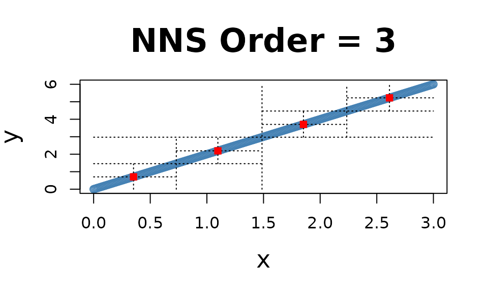
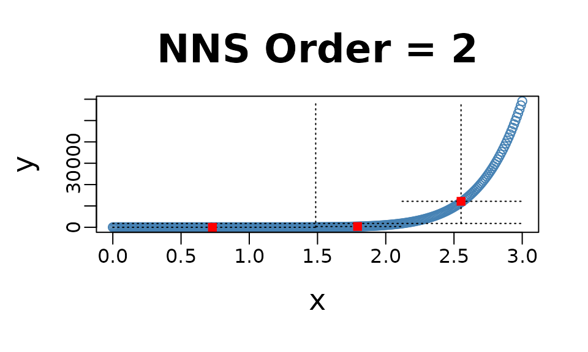
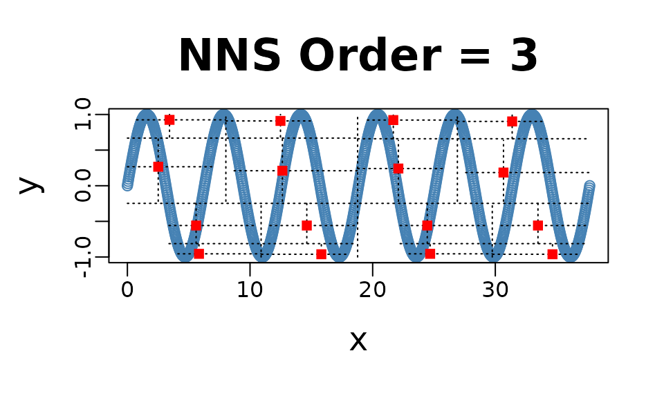
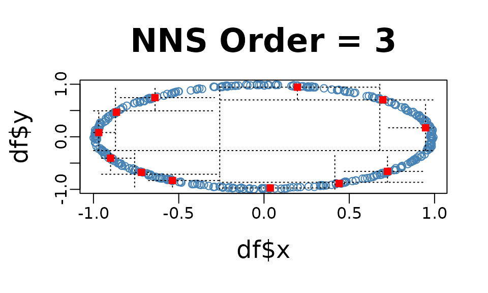
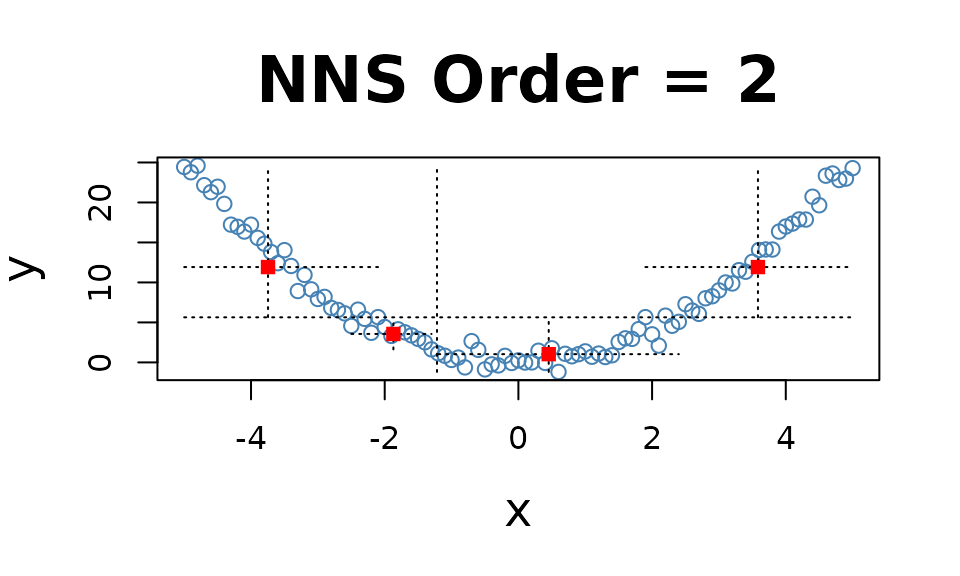
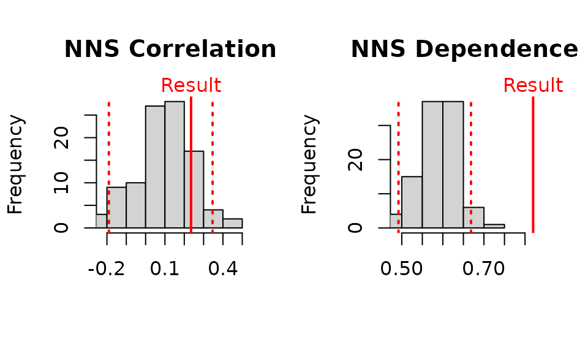

Getting Started with NNS: Correlation and Dependence
Fred Viole
Source:vignettes/NNSvignette_03_Correlation_and_Dependence.Rmd
NNSvignette_03_Correlation_and_Dependence.RmdCorrelation and Dependence
The limitations of linear correlation are well known. Often one uses
correlation, when dependence is the intended measure for defining the
relationship between variables. NNS dependence
NNS.dep is a signal:noise measure robust
to nonlinear signals.
Below are some examples comparing NNS correlation
NNS.cor and
NNS.dep with the standard Pearson’s
correlation coefficient cor.
Linear Equivalence
Note the fact that all observations occupy the co-partial moment quadrants.
x = seq(0, 3, .01) ; y = 2 * x
cor(x, y)## [1] 1
NNS.dep(x, y)## $Correlation
## [1] 1
##
## $Dependence
## [1] 1Nonlinear Relationship
Note the fact that all observations occupy the co-partial moment quadrants.
x = seq(0, 3, .01) ; y = x ^ 10
cor(x, y)## [1] 0.6610183
NNS.dep(x, y)## $Correlation
## [1] 0.950153
##
## $Dependence
## [1] 0.950153Cyclic Relationship
Even the difficult inflection points, which span both the co- and
divergent partial moment quadrants, are properly compensated for in
NNS.dep.

cor(x, y)## [1] -0.1297766
NNS.dep(x, y)## $Correlation
## [1] 0.1092458
##
## $Dependence
## [1] 0.8897228Asymmetrical Analysis
The asymmetrical analysis is critical for further determining a causal path between variables which should be identifiable, i.e., it is asymmetrical in causes and effects.
The previous cyclic example visually highlights the asymmetry of
dependence between the variables, which can be confirmed using
NNS.dep(..., asym = TRUE).
cor(x, y)## [1] -0.1297766
NNS.dep(x, y, asym = TRUE)## $Correlation
## [1] 0.1092458
##
## $Dependence
## [1] 0.8897228
cor(y, x)## [1] -0.1297766
NNS.dep(y, x, asym = TRUE)## $Correlation
## [1] -0.01060862
##
## $Dependence
## [1] 0.01060865Dependence
Note the fact that all observations occupy only co- or divergent partial moment quadrants for a given subquadrant.
set.seed(123)
df = data.frame(x = runif(10000, -1, 1), y = runif(10000, -1, 1))
df = subset(df, (x ^ 2 + y ^ 2 <= 1 & x ^ 2 + y ^ 2 >= 0.95))
NNS.dep(df$x, df$y)## $Correlation
## [1] -0.02782733
##
## $Dependence
## [1] 0.3489969p-values for NNS.dep()
p-values and confidence intervals can be obtained from sampling
random permutations of
and running NNS.dep(x,$y_p$) to compare
against a null hypothesis of 0 correlation, or independence between
.
Simply set
NNS.dep(..., p.value = TRUE, print.map = TRUE)
to run 100 permutations and plot the results.

NNS.dep(x, y, p.value = TRUE, print.map = TRUE)
## $Correlation
## [1] 0.2350543
##
## $`Correlation p.value`
## [1] 0.17
##
## $`Correlation 95% CIs`
## 2.5% 97.5%
## -0.1899710 0.3465982
##
## $Dependence
## [1] 0.8197227
##
## $`Dependence p.value`
## [1] 0
##
## $`Dependence 95% CIs`
## 2.5% 97.5%
## 0.4920102 0.6685294Multivariate Dependence NNS.copula()
These partial moment insights permit us to extend the analysis to multivariate instances and deliver a dependence measure such that . This level of analysis is simply impossible with Pearson or other rank based correlation methods, which are restricted to bivariate cases.
set.seed(123)
x = rnorm(1000); y = rnorm(1000); z = rnorm(1000)
NNS.copula(cbind(x, y, z), plot = TRUE, independence.overlay = TRUE)## [1] 0.1977627